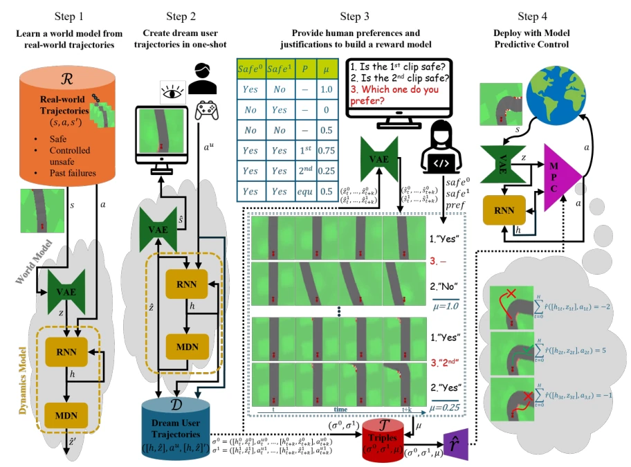
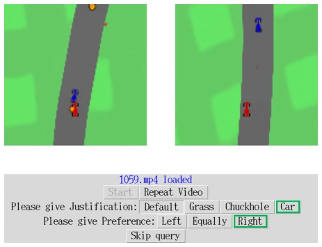
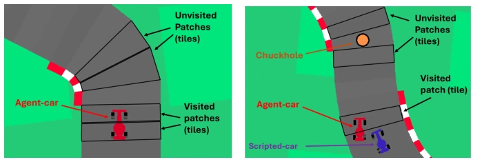
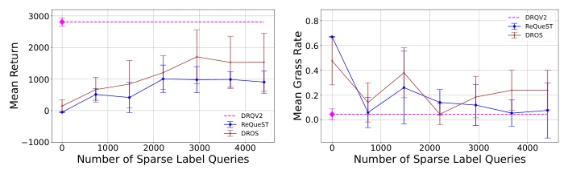
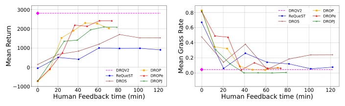
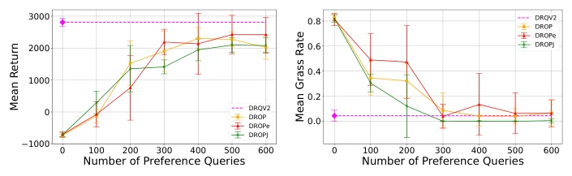
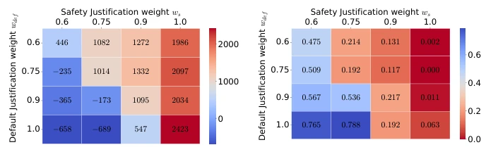
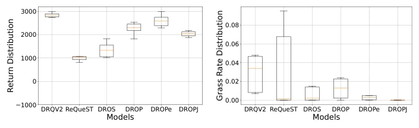
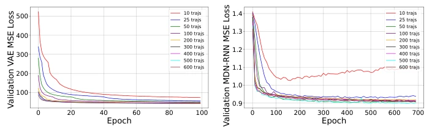
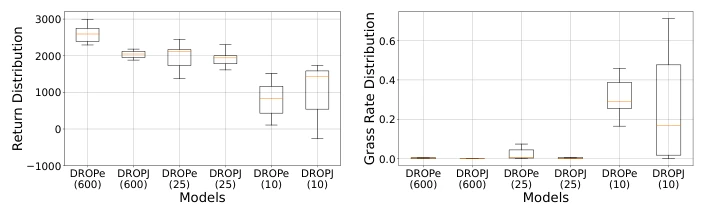

This DROPJ paper attempts to replace expensive real-world trial-and-error with "dreaming" (World Model), serving as a placebo for safety-critical tasks. Its biggest highlight is combining human preferences and safety Justifications, enabling the reward model to know "what matters more" rather than blindly pursuing high scores. However, turning humans into "gamers" running for hours in a simulator, does this count as another form of "human burden"? Moreover, if the world model is inaccurate, safety in the dream could become a car crash in reality. Although it saves time compared to iterative optimization, it relies heavily on offline data quality and is only applicable to continuous control tasks. Overall, it is a clever compromise, but do not expect it to solve all safety alignment problems, especially when human feedback itself contains noise.
In safety-critical domains (such as autonomous driving), traditional Reinforcement Learning (RL) is limited due to the lack of environment dynamics and reward functions [12, 20]. Direct real-world training carries too much risk, while methods relying on continuous human supervision are too costly. Existing world model-based methods can train offline, but require iterative trajectory generation and query optimization, making them computationally expensive and difficult to scale. Furthermore, relying solely on Preferences makes it difficult to ensure safety at deployment, as the reward model may ignore safety constraints not explicitly specified. This paper aims to solve the problem of how to learn human-aligned policies cost-effectively and safely under unknown dynamics and without reward functions, avoiding the high costs brought by real-world trial-and-error.
The DROPJ framework is divided into four core stages. First, train the world model using offline real trajectories, including VAE encoders to compress states and RNN/MDN predictors to simulate dynamics, building a virtual simulator. Second, adopt "One-shot" technology, where users operate directly in the simulator to generate "dream trajectories", significantly reducing query counts compared to iterative optimization. The third step is the core innovation, sampling trajectory pairs from dream trajectories, asking humans to provide preferences and **safety Justifications**. Through a weight mechanism (e.g., `ws > wdef`), safety Justifications are converted into preference labels `µ`, training the reward model to prioritize safety. Fourth, during deployment, combine the world model and reward model, using Model Predictive Control (MPC) to plan actions directly, without additional RL training. The innovation of this method lies in One-shot reducing computational costs, and Justifications assigning higher priority to safety goals, solving the problem of traditional preference learning ignoring safety details.

Fig. 1: The DROPJ framework [39]. In Step 3, we show the case with a single safety justification (associated with unsafe steps of the car driving onto grass).

Fig. 3: GUI of Obstacle Car Racing with multiple justifications [39]. J = Default is always pre-selected for brevity. The left agent-car contacts both a chuckhole and another car, while the right agent-car stays safe on road. Thus, the correct answer is J = Car, P = 2nd (Right).
实验Experiments
实验在 OpenAI Gym Car Racing 及扩展版 Obstacle Car Racing 中进行，模拟真实驾驶场景。基线包括 DRQV2（实机 RL）、ReQueST（迭代优化）、DROS/DROP（变体）。评测指标涵盖性能（Return）、安全（草地率、碰撞率）、人类负担和计算成本。结果显示，DROPJ 在安全性和性能上均优于 ReQueST 和 DROS。消融实验表明，One-shot 技术显著降低训练时间（Fig 4），相比迭代优化更高效。引入安全理由（Justifications）能显著提升部署时的安全性（Fig 7），即使牺牲部分性能。多理由设置（Fig 8）也验证了权重调整的有效性，证明安全约束可被灵活编码。此外，世界模型质量对最终性能影响显著（Fig 10, 11）。
Experiments were conducted in OpenAI Gym Car Racing and the extended version Obstacle Car Racing, simulating real driving scenarios. Baselines include DRQV2 (real-world RL), ReQueST (iterative optimization), DROS/DROP (variants). Evaluation metrics cover performance (Return), safety (grass rate, collision rate), human burden, and computational cost. Results show that DROPJ outperforms ReQueST and DROS in both safety and performance. Ablation studies show that One-shot technology significantly reduces training time (Fig 4), being more efficient compared to iterative optimization. Introducing safety Justifications can significantly improve safety at deployment (Fig 7), even at the cost of some performance. Multi-justification settings (Fig 8) also verify the effectiveness of weight adjustment, proving that safety constraints can be flexibly encoded. Additionally, world model quality has a significant impact on final performance (Fig 10, 11).

Fig. 2: Environments used in this research [39].

Fig. 4: Q1: Impact of the one-shot technique [39].

Fig. 6: Q2: Impact of using preferences instead of sparse labels [39].

Fig. 7: Q3: Impact of including a safety justification in preferences [39].

Fig. 8: Mean return (left) and mean grass rate (right) for various (wdef , ws) [39].
其他图片Other Figures

Fig. 9: Return and grass rate distributions of the best models in Car Racing [39].

Fig. 10: Encoder (VAE) and dynamics model (MDN-RNN) Validation Mean Squared Error (MSE) curves for different numbers of real-world trajectories [39].

Fig. 11: World model ablation for different numbers of real-world trajectories [39].